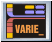

|  |
Technobabble Generator
|
Ecco un comodo generatore di termini tecnici di Star Trek. Per formare una
technobabble prendere a caso una parola per ogni colonna.
| Acute |
Propulsion |
Chamber |
| Aft |
Dissipation |
Interface |
| Anti-matter |
Sensor |
Coil |
| Bipolar |
Improbability |
Polymer |
| Cargo |
Buffer |
Biosphere |
| Command |
Graviton |
Platform |
| Communication |
Replicator |
Thruster |
| Computer |
Matter |
Deflector |
| Deuterium |
Anti-matter |
Replicator |
| Dorsal |
Organic |
Tricorder |
| Emergency |
Power |
Operation |
| Engineering |
Silicon |
Array |
| Environmental |
Holographic |
Matrix |
| Flight |
Transient |
Grid |
| Fore |
Integrity |
Sensor |
| Guidance |
Plasma |
Mode |
| Heat |
Fusion |
Panel |
| Impulse |
Control |
Storage |
| Increased |
Access |
Conduit |
| Inertial |
Auto |
Pod |
| Infinite |
Destruct |
Hatch |
| Ionizing |
Isolinear |
Regulator |
| Isolinear |
Transwarp |
Display |
| Lateral |
Energy |
Inverter |
| Linear |
Medical |
Spectrum |
| Matter |
Environmental |
Generator |
| Medical |
Coil |
Cloud |
| Navigational |
Impulse |
Field |
| Optical |
Warp |
Terminal |
| Optimal |
Phaser |
Module |
| Optional |
Operating |
Procedure |
| Personal |
Photon |
System |
| Personnel |
Deflector |
Diagnostic |
| Phased |
Integrity |
Device |
| Reduced |
Control |
Beam |
| Science |
Bridge |
Probe |
| Ship's |
Dampening |
Bank |
| Shuttlecraft |
Display |
Tie-In |
| Structural |
Beam |
Facility |
| Subspace |
Dampening |
Bay |
| Transporter |
Baseline |
Indicator |
| Ventral |
Input |
Cell |
| Auto |
Optical |
Plate |
| Maintenance |
Reaction |
Thruster |
| Tactical |
Electrical |
Nacelle |
| Life |
Reserve |
Vent |
| Emergency |
Bulkhead |
Console |